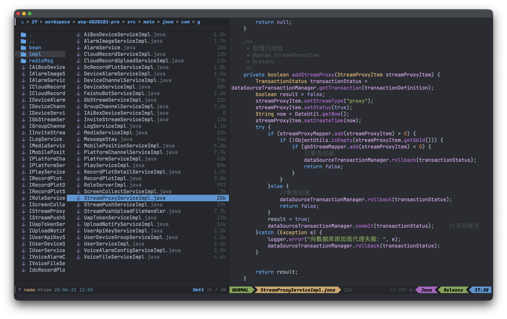

Neoemacs Face
这篇文章介绍下关于 neo emacs 中 face 相关的配置。

face
Emacs 的 Face（面孔/样式）就像是 Word 或网页中的“文字样式”或“CSS 类”，它定义了文本的视觉属性，例如颜色、大小、粗细、背景色、下划线等。
emacs 使用 defface 定义一个 face ，使用 set-face-attribute 来修改 face 的属性。set-face-attribute 可以通过使用 face-background 与 face-foreground 来动态获取 face 的属性。
(defface doom-modeline-buffer-file-alpha
'((t :inherit doom-modeline))
"group doc"
:group 'doom-modeline)
(set-face-attribute 'doom-modeline-buffer-file-alpha nil
:background (color-alpha (face-background 'doom-modeline-buffer-file ) 0.9)
:foreground "black"
:weight 'bold)
font
在 Emacs 中，配置默认字体是字体显示设置的基础，它为所有字符提供了统一的显示基准，确保界面整体的视觉一致性。
特别需要注意的是，为了实现中英文混排时的最佳显示效果，建议为 Emacs 单独配置与英文字体等宽的 CJK 字体。由于不同字体设计存在差异，英文字体与 CJK 字体在设置为等宽时，往往需要调整各自的字号大小以保持对齐协调。
以 neoemacs 配置为例，通过将 JetBrains Mono（英文字体）与方正悠宋+ GBK（中文字体）进行合理搭配，并在适当的字号设置下，即可实现中英文字符的完美等宽对齐。这一设置对于 Org mode 中的表格显示尤为重要，能够有效避免因字符宽度不一致导致的表格错位问题，提升编辑和阅读体验。
(progn (set-selection-coding-system 'utf-16le-dos)
(setq doom-font (font-spec :family "JetBrains Mono" :size 17 )
cjk-font "方正悠宋+ GBK"
cjk-font-size 20))
(defun init-cjk-fonts()
(when (display-graphic-p) (eq (framep (selected-frame)) 'x)
(dolist (charset '(kana han cjk-misc bopomofo))
(set-fontset-font (frame-parameter nil 'font)
charset (font-spec :family cjk-font :size cjk-font-size)))))
(add-hook 'doom-init-ui-hook 'init-cjk-fonts)
我的工作流需要在1080P与2K显示器之间频繁切换。由于2K屏幕像素密度更高，默认字体在显示时会显得过小，尤其在录制屏幕内容时，过小的字体会严重影响观看效果。而若通过降低系统分辨率来适配字体大小，又会导致录制视频无法达到真正的2K画质。
Doom Emacs中的doom-big-font配置项为此提供了优雅的解决方案。通过为高分辨率显示器单独设定更大的字号，即可使字体在不同分辨率的屏幕上保持基本一致的视觉大小，既兼顾了录制时的清晰度，也确保了跨设备工作体验的一致性。
;; 设置大字体
(setq doom-big-font (font-spec :family "JetBrains Mono" :size 20 ))
(defun my/setup-big-cjk-fonts ()
"Setup CJK fonts for Doom Big Font Mode."
(dolist (charset '(kana han symbol cjk-misc bopomofo))
(set-fontset-font t charset (font-spec :family "方正悠宋+ GBK" :size 24 ))))
(add-hook 'doom-big-font-mode-hook #'my/setup-big-cjk-fonts)
在实现了基础字体设置后，还可以进一步为不同模式定制专用字体。例如，让 java mode 使用另一款等宽字体。在此过程中，关键注意事项是让这些字体的字号能响应 doom-big-font-mode 的变化，从而在不同分辨率下都能保持协调的视觉大小。
除了主编辑区，Emacs 底部的 Minibuffer（命令输入框）也是一个需要单独处理样式的元素。为其设定独特的字体和样式，能有效提升这个高频交互区域的辨识度和使用体验。
;; 设置不同模式下的字体
(defun my-set-font-for-mode ()
(if (bound-and-true-p doom-big-font-mode)
(cond
((derived-mode-p 'python-mode)
(setq-local face-remapping-alist '((default (:family "Fira Code" :height 210) default))))
((derived-mode-p 'java-ts-mode)
(setq-local face-remapping-alist '((default (:family "Fira Code" :height 210) default))))
((derived-mode-p 'vterm-mode)
(setq-local face-remapping-alist '((default (:family "Kode Mono" :height 210) default)))))
(cond
((derived-mode-p 'python-mode)
(setq-local face-remapping-alist '((default (:family "Fira Code" :height 170) default))))
((derived-mode-p 'java-ts-mode)
(setq-local face-remapping-alist '((default (:family "Fira Code" :height 170) default))))
((derived-mode-p 'vterm-mode)
(setq-local face-remapping-alist '((default (:family "Kode Mono" :height 160) default)))))
))
(add-hook 'after-change-major-mode-hook #'my-set-font-for-mode)
(defun my-modeline-fonts-on-big-font-mode ()
(if doom-big-font-mode
(progn
(custom-set-faces
'(indent-bars-face ((t (:family "Kode Mono" :height 210))))
'(mode-line ((t (:family "IBM Plex Mono" :box nil :height 175))))
'(mode-line-inactive ((t (:family "IBM Plex Mono" :box nil :height 175))))))
(progn
(custom-set-faces
'(indent-bars-face ((t (:family "Kode Mono" :height 170))))
'(mode-line ((t (:family "IBM Plex Mono" :box nil :height 150))))
'(mode-line-inactive ((t (:family "IBM Plex Mono" :box nil :height 150))))))))
(add-hook 'doom-big-font-mode-hook 'my-modeline-fonts-on-big-font-mode)
;; 设置 minibuffer 中的字体
(defun my-set-font-for-minibuffer ()
(if (bound-and-true-p doom-big-font-mode)
(setq-local face-remapping-alist '((default (:family "M PLUS Code Latin 50" :height 210) default)))
(setq-local face-remapping-alist '((default (:family "M PLUS Code Latin 50" :height 170) default))))
(redraw-frame (selected-frame)))
(add-hook 'minibuffer-setup-hook #'my-set-font-for-minibuffer)
给 face 设置字体，create-fontset-from-fontset-spec 函数可以为一个样式的分别设定不同的字体及字号。
(defun my/create-modeline-fontset ()
(create-fontset-from-fontset-spec
"-*-JetBrains Mono-normal-*-*-*-17-*-*-*-*-*-fontset-modeline,
han:-*-方正悠宋+ GBK-normal-*-*-*-19-*-*-*-*-*-*,
cjk-misc:-*-方正悠宋+ GBK-normal-*-*-*-19-*-*-*-*-*-*"))
(set-face-attribute 'doom-modeline-buffer-file nil
:fontset (my/create-modeline-fontset)
:foreground "black"
:background (face-foreground 'font-lock-type-face )
:weight 'bold)
powerline
使用 powerline-arrow-left 可以定义一个箭头状的分隔符。其中：
-
箭头样式：通过参数指定，可选值包括 chamfer, contour, curve, rounded, roundstub, slant, wave, zigzag 等。
-
箭头方向：由函数名中的 left 或 right 决定，分别生成指向左或右的箭头。
-
颜色设置：函数最后的两个 face 参数，分别用于指定箭头的前景色与背景色。
(doom-modeline-def-segment powerline-filename-right-1 “Insert a Powerline separator into the Doom Modeline.” (propertize " " ‘display (powerline-arrow-left ‘mode-line ‘doom-modeline-buffer-file-alpha)))
在大字体模式下，powerline 也需要做下适配，具体实现过程如下：
(defun my-update-powerline-scale ()
"Adjust powerline scale based on doom-big-font-mode."
(setq powerline-scale (if doom-big-font-mode 1.5 1))
(powerline-reset))
(add-hook 'doom-big-font-mode-hook 'my-update-powerline-scale)
alpha
Neo Emacs 应用了背景透明补丁，该补丁会为 Emacs 内字体的前景色设置透明度，但此效果对 Powerline 分隔符无效。为确保 Powerline 在透明背景下视觉协调，我们需要为其分隔符单独设置一次颜色。为此，我们通过大模型生成了一个函数，可将颜色值转换为带透明度的格式，以解决此适配问题。
(defun color-alpha (color alpha &optional bg)
"返回 COLOR 按 ALPHA 混合到 BG（默认黑色）的标准 #RRGGBB 颜色，可用于 Emacs face。"
(let* ((bg (or bg "#000000"))
;; 如果 color 已经是 #RRGGBB，就手动解析
(parse-hex
(lambda (hex)
(list (/ (string-to-number (substring hex 1 3) 16) 255.0)
(/ (string-to-number (substring hex 3 5) 16) 255.0)
(/ (string-to-number (substring hex 5 7) 16) 255.0))))
(fg-rgb (funcall parse-hex color))
(bg-rgb (funcall parse-hex bg))
;; 混合每个通道
(r (+ (* alpha (nth 0 fg-rgb)) (* (- 1 alpha) (nth 0 bg-rgb))))
(g (+ (* alpha (nth 1 fg-rgb)) (* (- 1 alpha) (nth 1 bg-rgb))))
(b (+ (* alpha (nth 2 fg-rgb)) (* (- 1 alpha) (nth 2 bg-rgb)))))
;; 转回 #RRGGBB
(format "#%02x%02x%02x"
(floor (* r 255))
(floor (* g 255))
(floor (* b 255)))))
(defface doom-modeline-buffer-file-alpha
'((t :inherit doom-modeline))
"group doc"
:group 'doom-modeline)
(set-face-attribute 'doom-modeline-buffer-file-alpha nil
:background (color-alpha (face-background 'doom-modeline-buffer-file ) 0.9)
:foreground "black"
:weight 'bold)